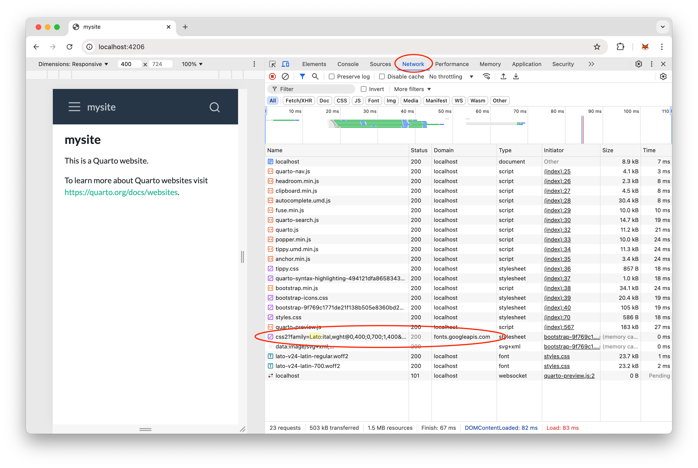

Removing Google Fonts from a Quarto website
Background
Quarto is, according to its own description, a tool for scientific and technical publishing. Personally, I think that Quarto revolutionizes the process of scientific writing, because it can generate multiple output formats (such as HTML, PDF, Word, PowerPoint, Reveal.js, entire websites, books, and more) from a single Markdown-like source. The source can also contain code, which can be executed during build time, and the corresponding results can be included in the rendered output. This is similar to Jupyter notebooks and R Markdown documents, but more powerful and versatile (in fact, Quarto uses Jupyter or Knitr under the hood).
In this post, I will focus on generating a website (a single or multiple HTML documents) with Quarto. There are many built-in Bootswatch-based themes to choose from, and almost all of them use beautiful typefaces provided by Google Fonts. However, using fonts from a third-party server like Google Fonts can be problematic if the website does not ask for explicit consent as mandated by the General Data Protection Regulation (GDPR). In fact, a Quarto website does not show a consent banner by default, and even if enabled, it does not include a mechanism to enable/disable Google Fonts (because they are baked into most themes).
I am neither a lawyer nor particularly interested in the intricacies of data privacy regulations. However, an Austrian lawyer recently sent out a series of cease and desist letters to thousands of website owners (both companies and private individuals), demanding that they pay 190 € for using Google Fonts without asking for explicit consent (thereby allegedly violating GDPR). Even though it is far from clear that these claims are even justified, I thought that it might be a good idea to get rid of Google Fonts and use fonts located directly on the website server instead. Besides avoiding any legal GDPR-related issues, fetching fonts from the same server the website is located on should also be faster (which is always a good thing for any website).
Implementation
Enough of all this legal mumbo jumbo, let’s get to the hopefully more interesting technical implementation. I will show how to remove Google Fonts from a minimal website project, which you can generate with the following command:
quarto create-project mysite --type websiteThis will create a minimal template inside the mysite folder with the following four files:
_quarto.ymlabout.qmdindex.qmdstyles.css
We will need to create an additional file called custom.scss, which for the moment is just an empty file.
Here’s the content of _quarto.yml, the global configuration file:
project:
type: website
website:
title: "mysite"
navbar:
left:
- href: index.qmd
text: Home
- about.qmd
format:
html:
theme: cosmo
css: styles.css
toc: trueThe default theme is cosmo. We’ll use this theme in our example, but you can also replace it with another theme if you want. However, we need to adapt the theme in order to remove Google Fonts, so we change the theme: cosmo line to:
theme: [custom.scss, cosmo]This will pull in stuff that we define in custom.scss later.
Now let’s find out which fonts are downloaded from Google Fonts by rendering the website, which you can do by entering the following command in a terminal:
quarto previewThis will open the website in your web browser. It should look something like this:
There are several ways to determine which Google Fonts are used, but since I am using Chrome I will only describe this process for this browser (but it should work similarly in Firefox, Edge, or whatever browser you are using):
- Right-click anywhere in your website and select “Inspect”. This will open the Developer Tools pane.
- Select the “Network” tab.
- Check the “3rd-party requests” box.
- Refresh the page.
- Find the requests that fetch fonts from Google, the font name should be contained somewhere in the name.

In this example, we can see that the website requests the “Source Sans Pro” font from Google Fonts. Now all we have to do is download this font, add it to our website folder, and redirect some font definitions.
First, let’s download the font files from Google Fonts. We will not use the official website, because it is rather complicated to get the font in the right format. Instead, we will use google-webfonts-helper, a simpler interface that makes it very easy to download the desired fonts.
Open this website, and select “Source Sans Pro” in the left sidebar (you can narrow down the displayed fonts by typing “Source Sans Pro” into the text box in the top left corner). In addition to the “regular” style (which is already pre-selected), check at least “300” and “700” (these are the styles that are used by our example website according to the name of the request in the Developer Tools pane). It doesn’t hurt to download more styles, so I recommend to at least also check the italic variants of those three weights.
In the third section (“3. Copy CSS”), select “Modern Browsers”. Change the value of the “Customize folder prefix (optional)” textbox below to /fonts/ (so delete the preceding ..).
That’s it, now click on the download icon at the bottom to download the selected fonts as a zip file. Extract the contents of the file, and put all files into a folder called fonts located in your website root.
In addition, copy the CSS (displayed in the third section) and paste everything into the empty styles.css file.
Finally, add the following lines to custom.scss:
/*-- scss:rules --*/
$web-font-path: false; // disable Google FontsYour website now uses the Source Sans Pro font from its own folder, which you can readily verify with the Developer Tools (the third-party request to Google Fonts is now gone).